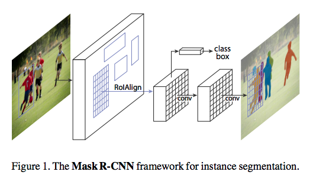
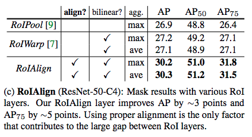
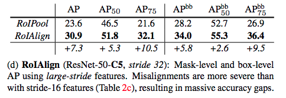
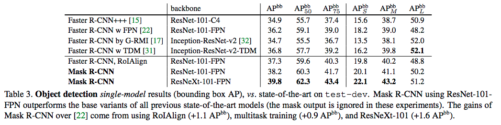
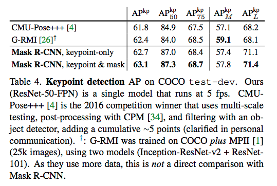

论文：http://openaccess.thecvf.com/content_ICCV_2017/papers/He_Mask_R-CNN_ICCV_2017_paper.pdf
Motivation
R-CNN (Region-based CNN) 是增加了bounding-box object detection 来处理多个 candidate object regions，并且在每个RoI上独立评估网络。之后有很多工作对R-CNN进行了扩展，发现通过在RoIs的特征上使用 RoIPool ，可以提高R-CNN的速度和准确度。Faster R-CNN改进了这个过程，用一个 Region Proposal Network (RPN) 学习attention mechanism，得到了更灵活、鲁棒性更强的网络框架。
Mask R-CNN 是在 Faster R-CNN 的基础上，增加了一个给每一个Region of Interest (RoI) 预测segmentation masks的分支，在检测物体的同时，能够为每个实例生成一个segmentation mask。
Contribute
用 RoIAlign 层解决像素点的 misalignment问题。Faster R-CNN 做 RoIPool 没有考虑输入输出在pixel-to-pixel层面的对齐，在提取实例特征时空间粒度很粗糙，像素点存在misalignment。Mask R-CNN为了解决这种misalignment提出叫作 RoIAlign 的 quantization-free层，能够更准确地保留空间位置信息。
论文发现只做了 RoIAlign 一小点改动，mask 的准确率就从 10% 提高到 50%，如果localization metrics更严格的话，提升效果会更明显。
论文发现将类别预测过程和mask过程解耦很重要，独立为每一个类别预测一个二值mask，用RoI 分类分支来预测类别。与此相对的FCNs 是在每个像素点上同时进行分割和分类的multi-class categorization，实验发现这种方法在实例分割上表现并不好。
Mask R-CNN 容易训练，计算量也只在Faster R-CNN上增加了一点 (5fps)，很容易扩展到其他任务，比如以同样的框架可以预测 human poses。
对实例分割任务，早期基于R-CNN的方法是先对proposals进行分割，再进行识别，这样的模型速度慢，准确率还低；而Mask R-CNN是同时预测 mask 和分类标签，速度更快。
models
Faster R-CNN 对每个candidate object 有两个输出，一个类别标签 和 一个bounding box，Mask R-CNN 增加了一个 object mask 的输出。object mask 对物体的spatial layer 有更高要求，Mask R-CNN的关键就是如何做pixel-to-pixel的对齐。
Two-Stage
Faster R-CNN 包括两个阶段，第一个阶段叫 Region Proposal Network (RPN)，用来生成candidate对象的bounding boxes，第二个阶段用 RoIPool 抽取每个候选框的特征，在这个特征上做分类和bounding box 回归。Mask R-CNN 沿用了Faster R-CNN 的two-stage，不同的是第二个阶段在原有输出上，同时为每个RoI输出一个binary mask。也就是Faster R-CNN 原来的classification分支和bounding box 回归分支不变，新加的mask 分支是在每个RoI上加一个小的FCN，以pixel-to-pixel的形式预测出一个segmentation mask。网络结构如下如：

在训练过程中，对每个 RoI 的multi-task loss 定义为：$L = L_{cls} + L_{box} + L_{mask}$ ，其中$L_{mask}$ 对每个 RoI 有 $Km^2$ 维，表示$K$ 个分辨率为 $m \times m$ 大小的binary mask。$L_{mask}$ 计算用了per-pixel sigmoid，定义为平均binary cross-entropy loss，每个RoI 的$L_{mask}$ 计算只考虑ground truth 所对应的mask，其他mask输出不算入loss。这种$L_{mask}$ 定义方法将mask生成和类别预测任务解耦为两个并行的分支。
RoIAlign
RoIPool是从每个RoI中抽取feature map的常规操作，RoIPool 是先将float的RoI 量化为离散的粒度，比如将$x$变为$[x/16]$，量化后的RoI再分割到spatial bins中，比如$7\times 7$的bin，最后将每个bin中的值用max pooling或其他pooling方法，得到aggregated 特征值。
RolPool的量化过程使得RoI和抽取的特征之间存在misalignments，这对像素级准确率的预测任务有很大的负面影响。为解决这个问题，Mask R-CNN引入了RoIAlign层，去掉RoIPool的 harsh quantization，适当地将抽取的特征和输入进行对齐。方法很简单，就是避免RoI边界处和bins的量化，将$[x/16]$ 改为 $x/16$，在每个RoI bin的4个regularly sampled locations 上用bilinear interpolation计算输入特征值。
实验证明RoIAlign的提升效果非常明显：


Experiments
不加任何的tracks，Mask R-CNN在实例分割，bounding-box对象检测和人体关键点检测三个任务上都超过了Faster R-CNN：

